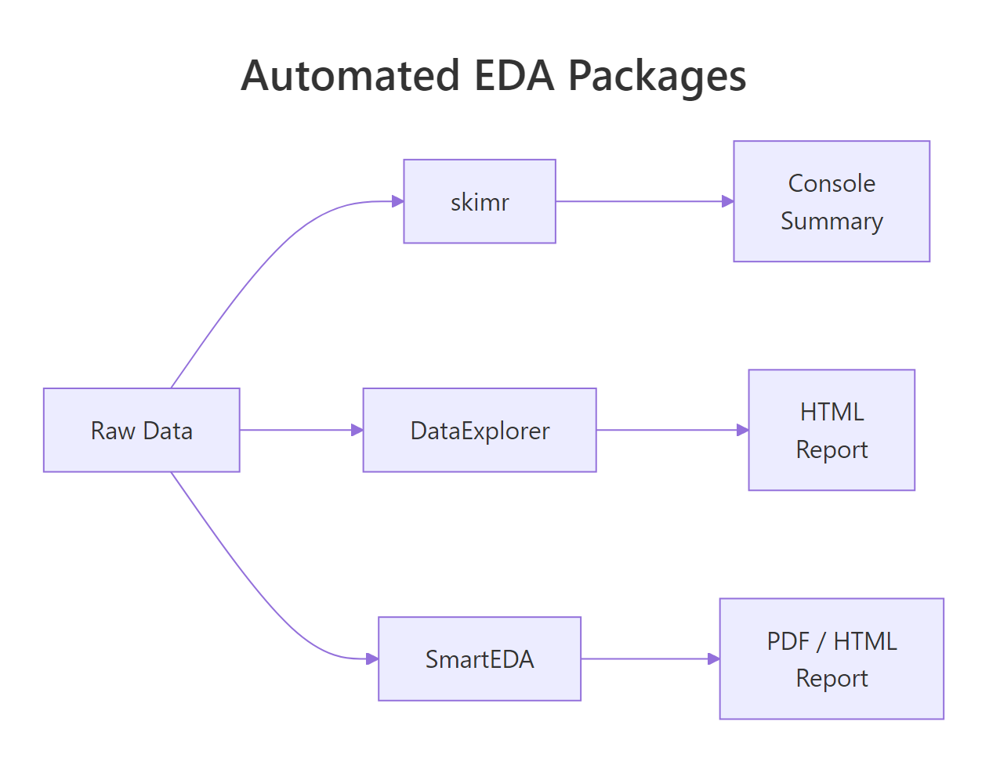
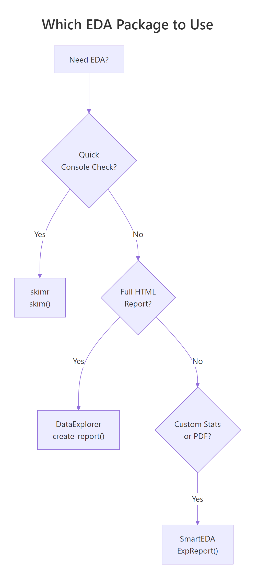
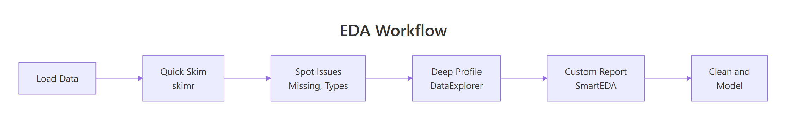

Automated EDA in R: Get a Full Data Profile in 5 Minutes (3 Packages Compared)
Automated EDA packages in R generate data summaries, distribution plots, and correlation matrices with a single function call. They save hours of manual exploration.
Introduction
You just loaded a new dataset with 30 columns and 10,000 rows. Before building any model, you need to understand the data. How many missing values are there? Which variables are skewed? Are any columns correlated?
Doing this manually means writing dozens of summary(), table(), and hist() calls. That is slow, repetitive, and easy to get wrong. Automated EDA packages handle all of it in one line of code.
In this tutorial, you will learn three R packages that auto-generate data profiles. skimr delivers quick console summaries. DataExplorer produces full HTML reports with visualizations. SmartEDA offers customizable analysis with PDF export. You will run code for each, compare outputs, and learn when to use which.

Figure 1: How DataExplorer, skimr, and SmartEDA each process raw data into different output formats.
What Does Each Package Do at a Glance?
Before diving into code, let's understand the philosophy behind each package. They solve the same problem, "tell me about my data", but in different ways.
skimr is built for speed. It prints a compact, type-aware summary directly to your console. No files generated, no HTML, just the numbers you need to decide what to do next.
DataExplorer is built for completeness. It generates an entire HTML report with histograms, bar charts, correlation heatmaps, missing-value profiles, and principal component plots. One function call gives you a shareable document.
SmartEDA is built for customization. It offers granular control over which statistics to compute, supports grouped analysis, and can export charts to PDF, useful for formal reports.
Here is a feature comparison:
| Feature | skimr | DataExplorer | SmartEDA |
|---|---|---|---|
| Console summary | Yes | Yes | Yes |
| HTML report | No | Yes | Yes |
| PDF export | No | No | Yes |
| Missing data profile | Yes | Yes | Yes |
| Correlation heatmap | No | Yes | Yes |
| Distribution plots | Inline sparklines | Full histograms | Density + bar plots |
| Grouped statistics | Yes | Limited | Yes |
| Custom statistics | Yes (skim_with) | No | Yes (custom functions) |
| One-line report | skim() | create_report() | ExpReport() |
Let's load the packages and a sample dataset to work with throughout this tutorial.
The airquality dataset has 153 observations and 6 numeric variables. Notice that Ozone and Solar.R have NA values, perfect for testing how each package handles missing data.
Try it: Load the mtcars dataset into a variable called ex_mt. Use dim() and names() to check its shape and column names. How many rows and columns does it have?
Click to reveal solution
Explanation: dim() returns rows and columns as a vector. names() lists all column names. This manual check is what automated EDA replaces.
How Does skimr Summarize Your Data in One Line?
The skim() function is the heart of skimr. It groups variables by type and returns a rich summary with completeness rates, central tendency, spread, and even inline histograms, all in your console.
Let's run it on our airquality data.
That single call tells you everything critical. Ozone has a complete_rate of 0.758, meaning 24% of its values are missing. Solar.R is 95% complete. Wind and Temp have no missing values at all. You also get the full five-number summary (p0 through p100) and standard deviation.
skimr also supports grouped summaries. Let's see how Ozone and Temperature vary by month.
Now you can spot trends immediately. Ozone peaks in July and August (means of 59 and 60), then drops in September. June has the worst completeness at only 30%, a red flag for any analysis using that month's Ozone data.
skim(starts_with("sales_")) or skim(where(is.numeric)) to focus on the columns you care about.You can also create custom skim summaries with skim_with(). This lets you add your own statistics like coefficient of variation or interquartile range.
The coefficient of variation (CV) shows that Wind is relatively more variable (CV = 0.35) than Temp (CV = 0.12). The IQR confirms this pattern.
Try it: Run skim() on the iris dataset. Which variable has the smallest standard deviation? Store the skim output in ex_iris_skim.
Click to reveal solution
Explanation: Sorting by numeric.sd reveals that Sepal.Width actually has the smallest standard deviation (0.436), not Petal.Width. Always check, intuition can mislead.
How Does DataExplorer Profile an Entire Dataset?
DataExplorer takes a different approach than skimr. Instead of a console summary, it generates full visualizations, histograms, bar charts, correlation heatmaps, and missing-value profiles. The create_report() function bundles all of these into a single HTML document.
Let's start with introduce(), which gives a high-level data overview.
This tells you in one glance: 153 rows, 6 continuous columns, 0 discrete columns, 44 total missing values, and only 111 complete rows (rows with no NAs at all). That means 42 rows have at least one missing value.
Next, let's profile the missing data pattern.
The missing data profile reveals that Ozone is the primary concern at 24.2% missing. Solar.R has a small 4.6% gap. The remaining four variables are complete. This information drives your imputation strategy.
DataExplorer also generates histograms for every numeric variable at once.
From these histograms, you can see that Ozone is heavily right-skewed, most days have low ozone, but some days spike. Wind looks roughly normal. Temp is slightly left-skewed (more hot days than cold in this summer dataset).
The correlation heatmap shows which variables move together.
The Ozone-Temp correlation of 0.70 makes physical sense, hotter days produce more ground-level ozone. The negative Ozone-Wind correlation (-0.60) also makes sense, wind disperses ozone. These are the kinds of insights that take 10 minutes manually but seconds with DataExplorer.
create_report(dplyr::slice_sample(big_data, n = 10000)).Try it: Use introduce() on the mtcars dataset. How many total missing values does mtcars have? How many complete rows?
Click to reveal solution
Explanation: mtcars is a clean dataset with zero missing values. All 32 rows are complete. This is rare in real-world data, which is why EDA tools emphasize missing-value detection.
How Does SmartEDA Generate Custom Reports?
SmartEDA sits between skimr's simplicity and DataExplorer's visual richness. Its strength is granular control, you can specify exactly which statistics to compute, group by target variables, and export to PDF.
The ExpData() function provides a data overview similar to DataExplorer's introduce().
This confirms what we found with the other tools: 72.5% of rows are complete, and 27.5% have at least one missing value.
The real power of SmartEDA is ExpNumStat(), which generates detailed numeric statistics with outlier flags and normality indicators.
Now you know that Ozone has 2 outliers (1.72% of non-missing values) and Wind has 3 outliers (1.96%). No other variable has outliers. This level of detail is not available from skimr or DataExplorer without extra code.
SmartEDA also handles categorical analysis well. Let's create a categorical variable and analyze it.
This cross-tabulation reveals a strong pattern: 8-cylinder cars are overwhelmingly automatic (63% of automatics), while 4-cylinder cars are mostly manual (62% of manuals). SmartEDA makes this kind of target-variable analysis straightforward.
ExpReport(aq, op_file = "eda_report.pdf") to get a downloadable document you can attach to emails or presentations. No other package in this comparison supports PDF out of the box.Try it: Run ExpNumStat() on the iris dataset (exclude the Species column). Which numeric variable has the most outliers?
Click to reveal solution
Explanation: Sepal.Width has 4 outliers (2.67% of observations), while the other three variables have zero outliers. These are values that fall outside the typical boxplot whiskers (1.5 * IQR).
Which Package Should You Use and When?
Now that you have seen all three packages in action, the natural question is: which one should I actually use? The answer depends on your goal.

Figure 2: Decision flowchart for choosing the right EDA package based on your goal.
Here is a detailed comparison across eight criteria:
| Criterion | skimr | DataExplorer | SmartEDA |
|---|---|---|---|
| Best for | Quick console checks | Visual HTML reports | Custom grouped stats |
| Learning curve | Low | Low | Medium |
| Output format | Console / data frame | HTML | HTML / PDF |
| Missing data | complete_rate column | Dedicated plot | Percentage in overview |
| Distributions | Inline sparklines | Full histograms | Density plots |
| Correlations | Not built-in | Heatmap | Heatmap |
| Outlier detection | Not built-in | Not built-in | Yes (flags + counts) |
| Grouped analysis | Full support | Limited | Full support |
| Custom statistics | skim_with() | No | Custom functions |
In practice, the three packages work best together in a pipeline. Here is a combined workflow.

Figure 3: A typical EDA workflow combining all three packages in sequence.
This three-step pipeline gives you a complete data profile. Step 1 (skimr) takes 2 seconds and flags the big issues. Step 2 (DataExplorer) generates a shareable report in 10 seconds. Step 3 (SmartEDA) adds outlier detection and custom statistics for the detailed analysis.
Try it: You receive a CSV with 50 columns, 100,000 rows, and roughly 20% missing values. Which package would you use first and why? Write a one-line command for your chosen package using the aq data as a stand-in.
Click to reveal solution
Explanation: skimr is the best first step because it runs instantly, shows complete_rate for every variable, and does not generate files or plots. For 50 columns, you need a quick scan to identify which variables are worth investigating further with DataExplorer or SmartEDA.
Common Mistakes and How to Fix Them
Mistake 1: Running create_report() on huge data without sampling
❌ Wrong:
Why it is wrong: create_report() generates histograms, correlation heatmaps, and PCA plots for every variable. On 100,000+ rows, each plot processes every data point, and the correlation matrix computation is O(n * p^2).
✅ Correct:
Mistake 2: Forgetting to convert characters to factors before categorical EDA
❌ Wrong:
Why it is wrong: SmartEDA's categorical functions look for factor-type columns. Character columns are skipped entirely, so you get no categorical analysis at all.
✅ Correct:
Mistake 3: Ignoring complete_rate and analyzing NA-heavy variables
❌ Wrong:
Why it is wrong: With 37 missing values in Ozone, cor() returns NA by default. Even with use = "complete.obs", you are computing correlation on only 116 of 153 observations, which may not represent the full dataset.
✅ Correct:
Practice Exercises
Exercise 1: Compare EDA outputs on a clean dataset
Load the swiss dataset (built into R). It has 47 rows and 6 numeric columns with zero missing values. Run skim() on it, then use introduce() from DataExplorer. Finally, run ExpNumStat() from SmartEDA with outlier detection. Combine the results: which variable has the highest coefficient of variation (SD / mean), and does it have any outliers?
Click to reveal solution
Explanation: Catholic has the highest CV (1.01), meaning its standard deviation exceeds its mean, it is extremely variable. Education has 3 outliers despite moderate CV. Infant.Mortality has 1 outlier. The pipeline from skim (quick) to ExpNumStat (detailed) builds a complete picture.
Exercise 2: Build a synthetic messy dataset and profile it
Create a data frame with 200 rows and 5 columns: a numeric column with 15% NAs, a skewed numeric column (use rexp()), a factor with 4 levels, a normally distributed column, and an outlier-heavy column (normal + 5 extreme values). Use all three packages to profile it and identify every issue.
Click to reveal solution
Explanation: The pipeline caught all planted issues: 30 NAs in income (skim), right-skewed wait_time (skim histograms), and 5 outliers in the sensor column (SmartEDA). wait_time also flags outliers because exponential distributions have a long right tail.
Putting It All Together
Let's walk through a complete, realistic EDA workflow from start to finish using the airquality dataset.
This complete workflow takes under 30 seconds to run and gives you a comprehensive understanding of the dataset. You know exactly where the missing values are, which variables have outliers, and what relationships exist between variables.
Summary
| Package | Best For | Key Function | Output | Speed |
|---|---|---|---|---|
| skimr | Quick console checks | skim() |
Console / data frame | Fastest |
| DataExplorer | Visual HTML reports | create_report() |
HTML with plots | Medium |
| SmartEDA | Custom stats + PDF | ExpReport() |
HTML / PDF | Medium |
Key takeaways:
- Start every analysis with
skim(), it takes 2 seconds and catches the big issues (missing data, unexpected types, extreme values). - Use DataExplorer when you need visuals, histograms, correlation heatmaps, and missing-data plots in one HTML report.
- Use SmartEDA when you need detail, outlier counts, grouped statistics, and PDF-ready reports.
- All three packages work on the same data frame, combine them in a pipeline for the most thorough EDA.
- Always sample large datasets first,
create_report()andExpReport()can be slow or crash on millions of rows.
FAQ
Can I use these packages on datasets with millions of rows?
skimr handles large datasets well because it computes summary statistics without generating plots. DataExplorer and SmartEDA generate visualizations, so they slow down significantly on large data. Sample 5,000-10,000 rows first with dplyr::slice_sample() before running create_report() or ExpReport().
Do these packages work with tibbles and data.tables?
Yes. All three packages accept tibbles (from tidyverse) and standard data frames. skimr and DataExplorer also handle data.table objects. SmartEDA works best with standard data frames, convert with as.data.frame() if you encounter issues with data.table input.
Which package handles factor variables best?
SmartEDA. It provides dedicated functions for categorical analysis: ExpCTable() for frequency tables and ExpCatViz() for bar plots. DataExplorer's plot_bar() is a good alternative. skimr shows factor-level counts but does not generate plots.
Can I customize the output of create_report()?
Yes, but with limits. You can specify a response variable with y = "target_column" to add bivariate plots, and set config = configure_report() to toggle specific sections on or off. For deeper customization, use the individual functions (plot_histogram(), plot_correlation(), etc.) and assemble your own report in R Markdown.
References
- McNamara, A., Arino de la Rubia, E., Zhu, H., Ellis, S., & Quinn, M., skimr: Compact and Flexible Summaries of Data. CRAN. Link
- Cui, B., DataExplorer: Automate Data Exploration and Treatment. CRAN. Link
- Putatunda, S., Rama, K., Ubrangala, D., & Kondapalli, R., SmartEDA: An R Package for Automated Exploratory Data Analysis. arXiv:1903.04754 (2019). Link
- Staniak, M. & Biecek, P., The Landscape of R Packages for Automated Exploratory Data Analysis. The R Journal, 11(2), 347-369 (2019). Link
- Wickham, H. & Grolemund, G., R for Data Science, 2nd Edition. O'Reilly (2023). Chapter 11: Exploratory Data Analysis. Link
- DataExplorer documentation, Official package site. Link
- SmartEDA vignette, CRAN. Link
Continue Learning
- Missing Values in R: Detect, Count, Remove, and Impute NA, After EDA reveals missing data, learn the full toolkit for handling it: detection patterns, removal strategies, and imputation methods.
- Importing Data in R, Before you can profile data, you need to load it. This guide covers CSV, Excel, databases, and web APIs.